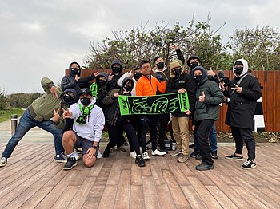
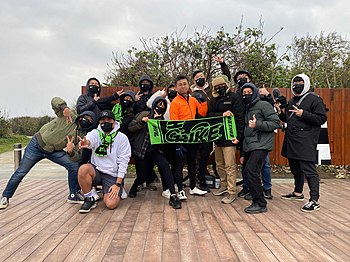

上班不要看 NSFW Youtube頻道
NSFW，是一個在2015年12月1日成立的YouTube頻道，所屬公司為陸伍伍參伍娛樂股份有限公司，創辦人為呱吉和湯瑪士，兩人也都是這個頻道的主要成員。上班不要看這個名稱來自於NSFW（Not Safe/Suitable For Work），亦即不適合在上班時間看的頻道，以尺度較大的影片拍攝內容吸引觀眾。
NSFW，是一個在2015年12月1日成立的YouTube頻道，所屬公司為陸伍伍參伍娛樂股份有限公司，創辦人為呱吉和湯瑪士，兩人也都是這個頻道的主要成員。上班不要看這個名稱來自於NSFW（Not Safe/Suitable For Work），亦即不適合在上班時間看的頻道，以尺度較大的影片拍攝內容吸引觀眾。
